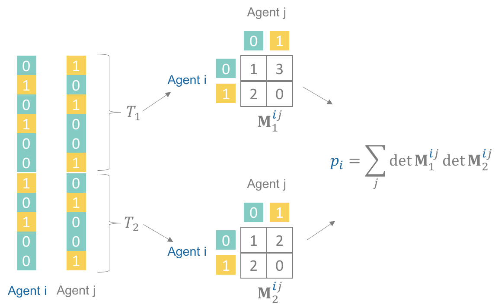
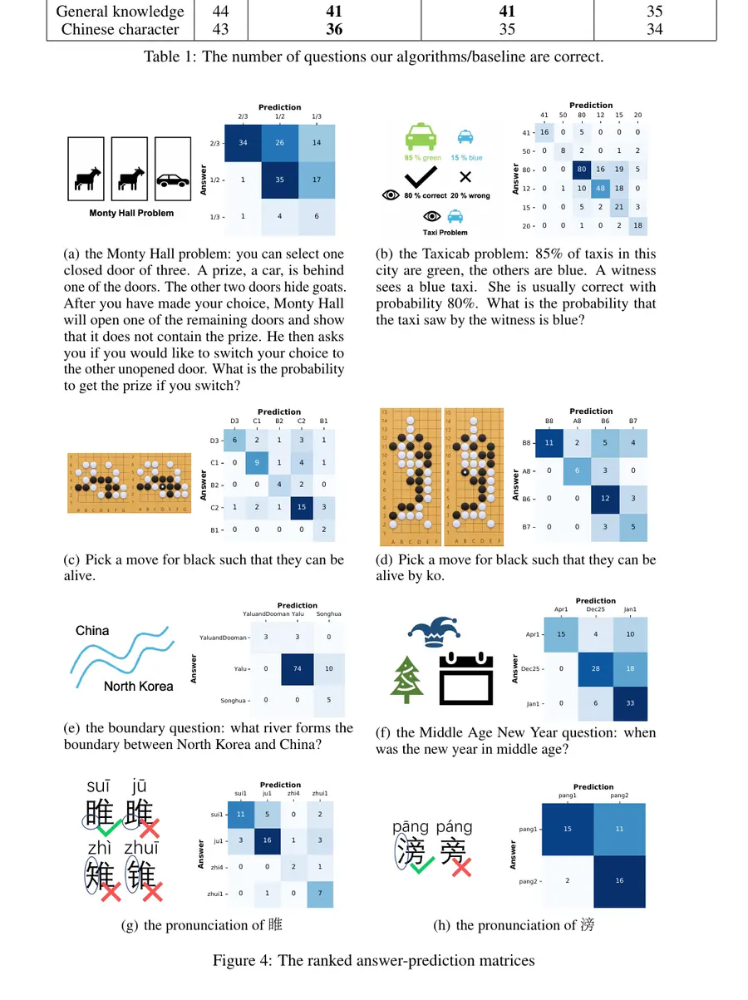
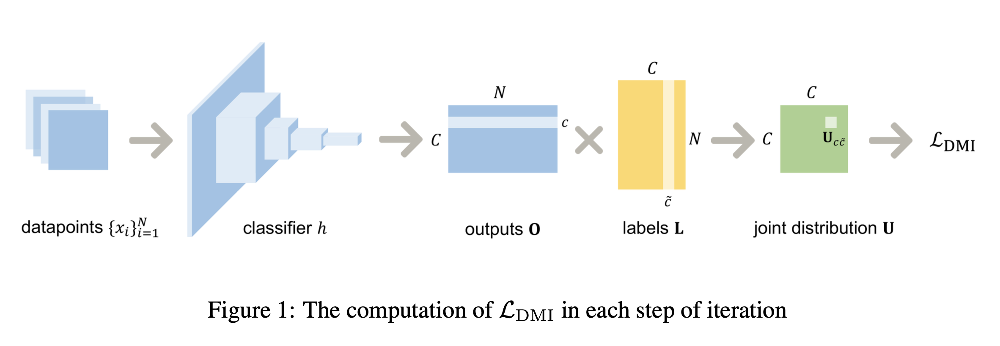
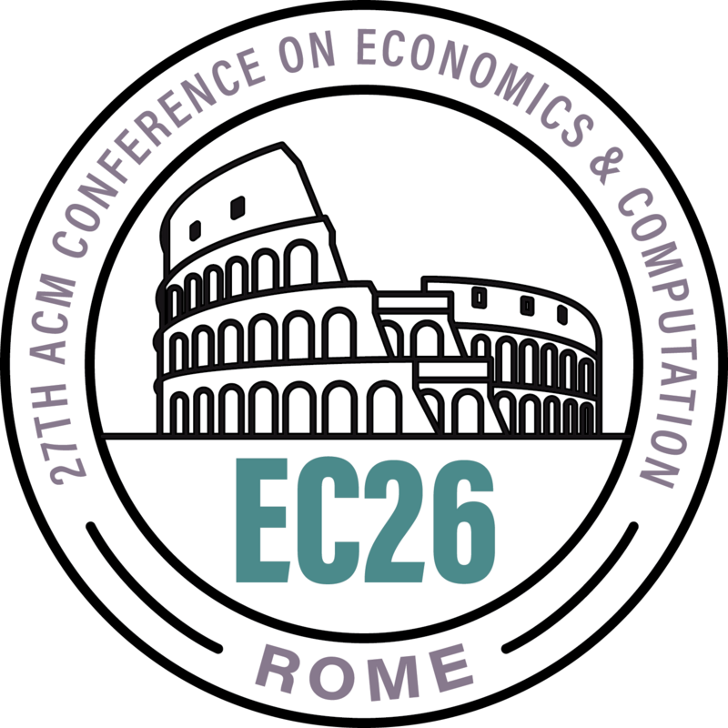
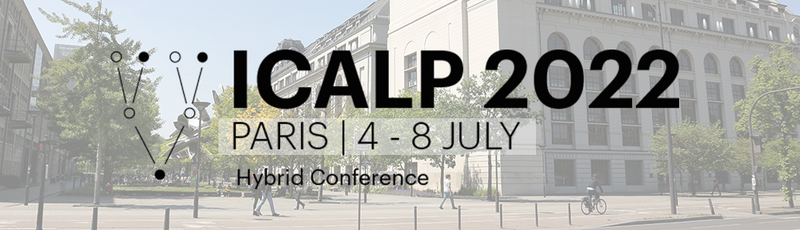
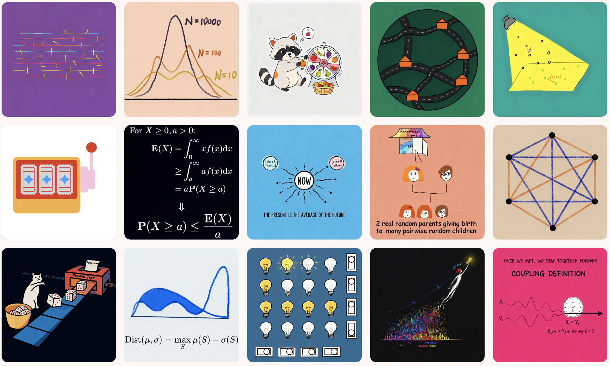
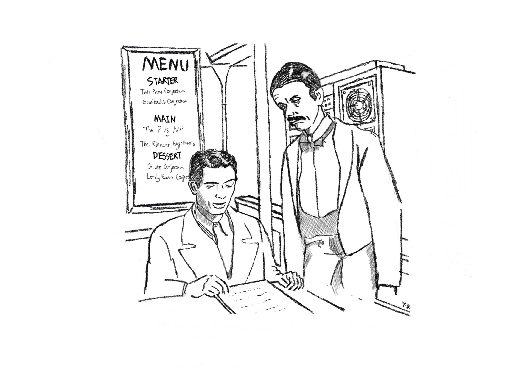
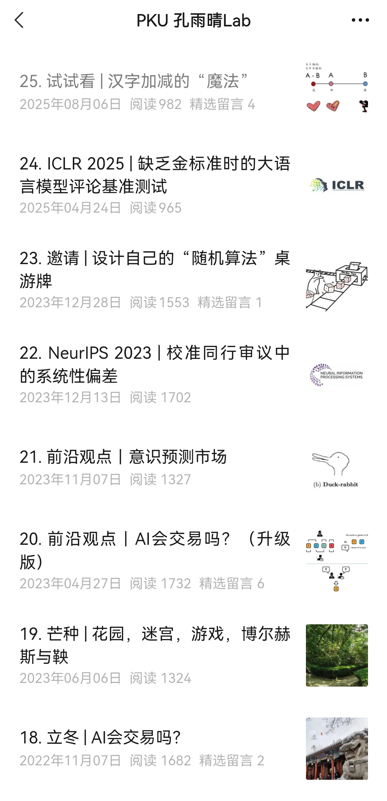

Dominantly Truthful Peer Prediction Mechanisms with a Finite Number of Tasks
Journal of the ACM (JACM), 71(2), Article 9, 2024.

Peking University · CFCS
Tenured Associate Professor
I am a tenured associate professor at the Center on Frontiers of Computing Studies (CFCS), Peking University. My research lies at the intersection of theoretical computer science and economics, with interests in information elicitation and evaluation, prediction markets, mechanism design, and applications to crowdsourcing and machine learning.
I received my B.S. in Mathematics from the University of Science and Technology of China in 2013 and my Ph.D. in Computer Science and Engineering from the University of Michigan in 2018, advised by Grant Schoenebeck.
Research
Journal of the ACM (JACM), 71(2), Article 9, 2024.

Neural Information Processing Systems (NeurIPS), 2022. Blog

ACM-SIAM Symposium on Discrete Algorithms (SODA), 2020. Talk Blog
Neural Information Processing Systems (NeurIPS), 2019. Blog

ACM Transactions on Economics and Computation (TEAC), 7(1), 2019.
Publications
International Conference on Learning Representations (ICLR), 2026. arXiv
The ACM Web Conference (WWW), 2026, pp. 99–110. arXiv
ACM Conference on Economics and Computation (EC), 2025.
International Conference on Learning Representations (ICLR), 2025.
The ACM Web Conference (WWW), 2025. Oral presentation.
The ACM Web Conference (WWW), 2025.
The ACM Web Conference (WWW), 2025.
ACM Conference on Economics and Computation (EC), 2024.
ACM Conference on Economics and Computation (EC), 2024.
Journal of the ACM (JACM), 71(2), Article 9, 2024. Extends SODA 2020 and ITCS 2022.
The ACM Web Conference (WWW), 2024.
Innovations in Theoretical Computer Science (ITCS), 2023.
Neural Information Processing Systems (NeurIPS), 2023.
The ACM Web Conference (WWW), 2023.
International Conference on Machine Learning (ICML), 2023.
Neural Information Processing Systems (NeurIPS), 2022. Blog
The Web Conference (WWW), 2022.
Innovations in Theoretical Computer Science (ITCS), 2022.
International Joint Conference on Artificial Intelligence (IJCAI), 2021.
ACM-SIAM Symposium on Discrete Algorithms (SODA), 2020. Talk Blog
European Conference on Computer Vision (ECCV), 2020. Oral (2%).
AAAI Conference on Artificial Intelligence (AAAI), 2020.
Web and Internet Economics (WINE), 2019.
Neural Information Processing Systems (NeurIPS), 2019. Blog
International Conference on Learning Representations (ICLR), 2019.
AAAI Conference on Artificial Intelligence (AAAI), 2019.
ACM Transactions on Economics and Computation (TEAC), 7(1), 2019.
ACM Conference on Economics and Computation (EC), 2018.
ACM Conference on Economics and Computation (EC), 2018.
Innovations in Theoretical Computer Science (ITCS), 2018.
Innovations in Theoretical Computer Science (ITCS), 2018.
Web and Internet Economics (WINE), 2016.
Talks
Invited talk, IJTCS-FAW, 2022.
Invited talk, Incentives in Machine Learning Workshop, ICML, 2020.
Invited talk, Women in EconCS, WINE, 2020.
Tutorial with Grant Schoenebeck, ACM Conference on Economics and Computation (EC), 2017.
Service

Program Committee, 2019–2022 and 2024–2025.
Senior Program Committee, 2022 and 2024–2026 · Program Committee, 2021.
ACM Conference on Economics and Computation (EC), 2023.

Program Committee, Track A, 2022.
Teaching
Probabilistic techniques for the design and analysis of algorithms, including concentration, randomized constructions, random walks, and Markov-chain methods.
Course materials draw in part on Alistair Sinclair’s Randomness and Computation lecture notes.

A mathematical introduction to modern data science, including high-dimensional geometry, spectral methods, random walks, large graphs, learning, and algorithms for massive data.
At Peking University, the course was initiated by John Hopcroft, and I continued teaching it afterward. The primary text is Foundations of Data Science by Avrim Blum, John Hopcroft, and Ravindran Kannan.
Previously: Algorithmic Game Theory, Fall 2019.
Students
Yuxuan Lu
Ying Wang
Mingyu Song
Yichong Xia
Weinan Qian
Jialiang Liu
Qian Wang
Zhihuan Huang
Yongkang Guo
Random
Random drawing

Comic by Yuqing Kong · Inspired by a scene from The Million Pound Note (1954)
“I’ll have a proof of the Twin Prime Conjecture, and an elegant solution to P vs. NP, with proofs of all the related corollaries. Make it a nice, thick manuscript.”
“It’ll cost quite a few tokens.”
“I know. And add an explanation simple enough for a high school student to follow.”
Random AI animation
Early pieces, made casually, when the technology was still limited. All of them are based on the science fictions in my wechat public account 麦金太尔街1844号.
狼人杀中的数学
讨论各个角色的人数该怎么设，对抗角色之间的博弈均衡分析，以及如何用经济学理论分析角色设计对观看体验的影响。和这套理论相关的论文见 SURPRISE! and When to Schedule It（IJCAI 2021，关于英雄联盟比赛观看的实验）和 BONUS! Maximizing Surprise（WWW 2022，关于问答游戏分数的设计理论）。
Random blogs
放一些随想的地方：包含没能写成论文的笔记、小游戏，以及一些简短的教程。

Fiction
Forthcoming in Flash Point Science Fiction .
麦金太尔街1844号 — my WeChat public account for science fiction (in Chinese).